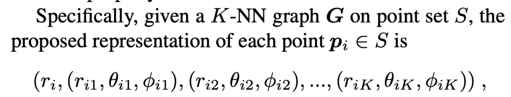
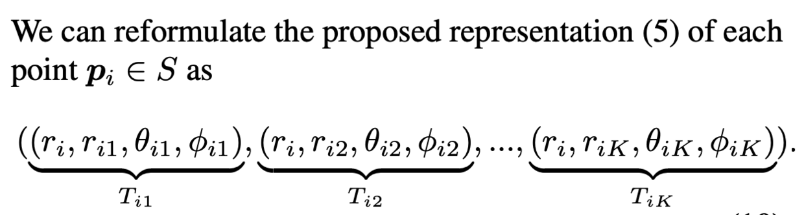
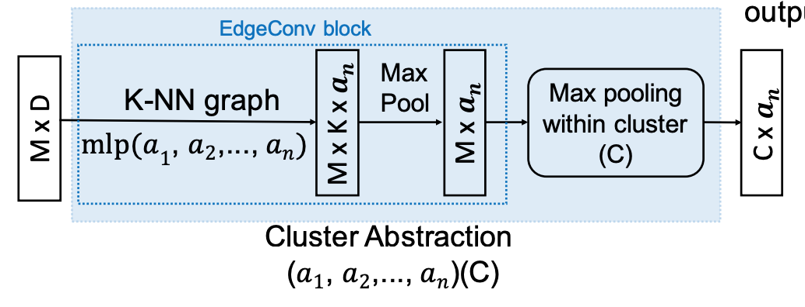

『Xu』ClusterNet: Deep Hierarchical Cluster Network with Rigorously Rotation-Invariant Representation for Point Cloud Analysis
文章最让我不解的就是DarkMatter AI Research到底是个什么地方（狗头）
文章的创新点主要有两个
- 「Rigorous Rotation-Invariant (RRI) Representation」是一个通过严格证明与推导得到的具有旋转不变性的point-wise neighborhood-based feature representation
- 「Network based on Unsupervised Clustering」通过无监督的聚类的方式，自下而上的生成一棵树，从而完成将local region逐步合并至global region的过程
首先是 「RRI Representation」
作者通过严谨的数学证明找出了几种具有旋转不变性的算子，例如取模$|·|$ / 两点之间的夹角 / etc. 这些算子具有旋转不变性其实是intuitive的，但是文章比较rigorous的地方就在于他通过了数学的证明验证了旋转不变性。 所以文章对每一个neighborhood中的每个点，利用这些旋转不变性的算子描述了点与centroid的关系，从而得到每一个点的local representation。

接下来要做的就是如何对local representation提取特征得到信息更丰富的local feature。作者进行了如下的转化（真的很巧妙了）

作者将$ri$分配到每一个邻居，然后的由一个四元祖表示每一个neighbor与centroid的关系，然后将${T{ik}\rbrace$看作一个新的点云「每个点云描述的是一个neighborhood」，并使用简单的pointnet提取特征。
原文中仅仅对原始input使用了一个RRI module，它有两个好处，一个是只要是描述同一物体的point cloud，哪怕经过旋转之后输入同一个RRI module那么输出的结果是一样的，使得后续的整个网络都具有旋转不变性质；另一个好处是能够对每一个点的feature进行加强，使得每一个feature都embed了neighbors的feature。
「Hierarchical Clustering Tree」
具体的实现细节如下图

首先利用了EdgeConv，将neighbors的feature aggregation到每一个人，这一步的操作不会实现down-sampling，而down-sampling的操作则是通过cluster完成的「$M > C$」。这个可以代替PointNet++中通过FPS来down-sampling使得整个过程更加reasonable。